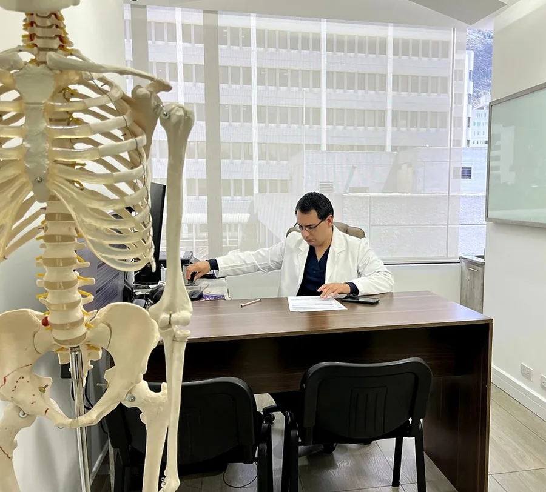

Cirujano ortopedista oncólogo · Quito
Tumores óseos y sarcomas, tratados por quien los opera.
Soy el Dr. Felipe Criollo Palacios. Cuénteme su caso y suba sus estudios: los reviso personalmente antes de la cita.

- Subespecialidad
- Ortopedia oncológicaUniversidad Militar Nueva Granada, Bogotá
- Cargo
- Ex jefe del Servicio de Ortopedia OncológicaDirectivo en SOLCA Quito
- Investigación
- 152 pacientesSerie de biopsia percutánea, publicada en 2015
- Docencia y sociedades
- Posgrado de OrtopediaUniversidad Central del Ecuador · ISOLS · SLATME
Lo primero que conviene saber
Antes de la biopsia, el cirujano. El trayecto de la aguja decide cómo será la operación.
En un posible tumor maligno, la biopsia es el primer paso de la cirugía. Si se toma por el lugar equivocado, la operación debe ser más amplia y la reconstrucción, más difícil.
Por qué importa quién la planificaEspecialidades
Dos campos, un mismo cirujano
Traumatología y ortopedia
- Fracturas y luxaciones
- Lesiones deportivas
- Cirugía de mano
- Prótesis de cadera y rodilla
Segunda opinión
Una decisión que no tiene vuelta atrás merece una segunda mirada.
Si ya tiene un diagnóstico, una resonancia o una biopsia, envíe sus estudios antes de viajar a Quito. El doctor los revisa, le entrega un informe escrito y se lo explica por videollamada.

Consulta express
Su caso, ordenado antes de la cita
Un asistente con inteligencia artificial le hace las preguntas que el doctor haría en la primera consulta. Usted responde con sus palabras y sube sus estudios. La valoración la hace el doctor.
- Elija el motivoMasa o tumor, lesión, dolor articular o control de una cirugía.
- Cuente su casoUna pregunta a la vez: cuándo empezó, cómo evoluciona, qué tratamientos recibió.
- Suba sus estudiosRadiografías, resonancias, tomografías, informes o biopsias.
- Confirme y envíeRevisa el resumen y autoriza el uso de sus datos de salud.
- El doctor respondeSu equipo le contacta con la propuesta: cita, teleconsulta o derivación.
Iniciar consulta express
El asistente no diagnostica ni receta. Si describe una señal de alarma, le indica acudir a emergencias. Cuándo consultar sin esperar
Para leer con calma
Las preguntas que más angustian
Dónde atiendo
CITIMED y Hospital Metropolitano, Quito
Centro Médico CITIMED, piso 6, consultorio 628, Av. Mariana de Jesús y Nuño de Valderrama, Quito.
